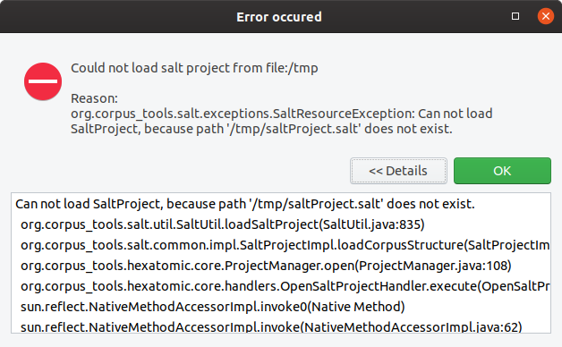

Logging and error handling
Logging
Hexatomic uses the SLF4J logging API to log messages. To enable a logger for a specific class, create a static final variable which holds the class-specific logging object.
private static final org.slf4j.Logger log =
org.slf4j.LoggerFactory.getLogger(MyClass.class);
You can use this log object everwhere in the code to output debug, info, warning or error messages to the console or to the log files.
int counter = 101;
log.debug("Selecting created document {}.", 101);
See the SLF4J manual for more information on the API.
To implement the API, we use the Logback library in the org.corpus_tools.hexatomic.core bundle.
For testing and debugging purposes, there is a logback-test.xml file in the root of the logging bundle.
This configuration file is loaded whenever Hexatomic is started from Eclipse using the Debug/Run configuration and will output messages on the debug level.
When compiling the Hexatomic product, the file logback.xml is copied to the product root directory and loaded from there.
This allows a user/developer to customize the logging on their own, even when using a published binary artifact instead of debugging directly from the Eclipse IDE.
Per default, only messages from the info level and above are printed to the command line.
See the Logback documentation how to write or adapt this file.
Handling exceptions
The core bundle exports the special org.corpus_tools.hexatomic.core.errors.ErrorService service which should be used to display error messages to the user.
To report an exception, simply call the handleException(...) function of the service with an error message, the exception object, and the class of the caller, i.e., the class in which you catch the exception.
project = SaltFactory.createSaltProject();
try {
project.loadCorpusStructure(path);
} catch (SaltException ex) {
// In this example the calling function is part of the ProjectManager class.
errorService.handleException("Cannot load project from " + path.toString(), ex,
ProjectManager.class);
}
This will produce the exception dialog shown below. It includes the error message, and a stack trace which the user can inspect by expanding "Details" (which is initially hidden).

In addition to the dialog, a log entry is added.
This log entry uses the logger for the caller class which has been passed to the handleException(...) method.
18:52:54.324 [main] ERROR o.c.h.c.ProjectManager - Exception occured: Could not load salt project from file:/tmp
org.corpus_tools.salt.exceptions.SaltResourceException: Can not load SaltProject, because path '/tmp/saltProject.salt' does not exist.
at org.corpus_tools.salt.util.SaltUtil.loadSaltProject(SaltUtil.java:835) ~[org.corpus-tools.salt-api_3.3.8.20190808115214.jar:na]
at org.corpus_tools.salt.common.impl.SaltProjectImpl.loadCorpusStructure(SaltProjectImpl.java:148) ~[org.corpus-tools.salt-api_3.3.8.20190808115214.jar:na]
at org.corpus_tools.hexatomic.core.ProjectManager.open(ProjectManager.java:108) ~[org.corpus_tools.hexatomic.core/:na]
at org.corpus_tools.hexatomic.core.handlers.OpenSaltProjectHandler.execute(OpenSaltProjectHandler.java:26) [org.corpus_tools.hexatomic.core/:na]
at sun.reflect.NativeMethodAccessorImpl.invoke0(Native Method) ~[na:1.8.0_232-ea]
Showing error messages
If an error does not originate from an exception, you can use the showError(...) function of the error service to display a dialog.
This function takes an optional dialog title, the error message, and the class of the caller as arguments, as shown in the following example.
if (hasChildren) {
errorService.showError("Error when deleting (sub-) corpus",
"Before deleting a (sub-) corpus, first delete all its child elements.", this.getClass());
return;
}
This produces both an error dialog and a logging output (without stack trace).

19:03:26.013 [main] ERROR o.c.h.c.CorpusStructureView$8 - Error when deleting (sub-) corpus: Before deleting a (sub-) corpus, first delete all its child elements.